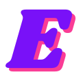

01
Wit op lavendel
Standaardkaart met groot nummer.
Design System · V6.8 · 23 september 2026
De kleur, de vette koppen en de pills van Lebara. De rust, het raster en de grote zinnen van Verve. En het violet en roze van ons eigen logo als accent. Zonder animaties: alles staat stil en is direct leesbaar.
01 · Kleur
Blauw — kern
#242EE0#0D1167#070723#3A7AFE#6E9BFF#E7EBFF#C9D1FFLogo-accenten — spaarzaam
#FA3C96#7911F8Neutraal
#FFFFFF#FAF8F5#565A85#D5DAF5Contrastparen
| Combinatie | Contrast | Gebruik |
|---|---|---|
| Navy op wit | 16,2 : 1 | Bodytekst |
| Blauw op wit | 8,3 : 1 | Koppen, links |
| Blauw op lavendel | 7,0 : 1 | Koppen in lichte band |
| Wit op navy | 16,2 : 1 | Donkere secties |
| Wit op blauw | 8,3 : 1 | Contactvlak, blauwe kaart |
| Navy op roze | 4,8 : 1 | Primaire knop |
| Violet op wit | 6,5 : 1 | Labels |
| Helder blauw (tekst) op navy | 6,0 : 1 | Labels en accentwoorden op donker |
| Wit op roze | 3,4 : 1 | Niet voor tekst — alleen het logo |
02 · Typografie
Bricolage Grotesque (800/700) voor koppen en cijfers: vet, een tikje eigenwijs, past bij het mollige logo. Instrument Sans (400–600) voor al het andere: rustig en redactioneel. Beide via Google Fonts.
H1 · Bricolage 800
clamp(40px, 6.9vw, 92px) · lh 0.98 · −0.035em
Onze schouders eronder.
H2 · Bricolage 800
clamp(34px, 5vw, 64px) · lh 1.02 · −0.03em
Bouwen om te weten
H3 · Bricolage 700
clamp(22px, 2vw, 28px) · lh 1.15
Versnellen met AI
Statement · Instrument Sans 400
clamp(24px, 3.1vw, 44px) · lh 1.18 · geen inspringing
Een werkende oplossing beantwoordt in twee weken vragen waar een onderzoek een kwartaal over doet.
Lede · Instrument Sans 400
18–22px · lh 1.5 · max 58ch
Wij starten projecten op waar iets van afhangt. Ook als er meerdere partijen aan tafel zitten en niemand de baas is.
Body · Instrument Sans 400
17px · lh 1.6 · max 62ch
Elke twee weken laten we zien wat er werkt: een gevalideerde aanname, een prototype, een pagina die live staat.
Label · Instrument Sans 600
14px · kapitalen · +0.08em · violet
Vanaf week 2
03 · Componenten
Knoppen — altijd pills
Chips
Kaarten — radius 24px, geen schaduw
01
Standaardkaart met groot nummer.
Voor het ene blok dat eruit moet springen.
Rustig, secundair.
Cijfers & sticker
Recent: in 9 weken de basis van een landelijk platform live gebracht voor vier publieke organisaties.
Rijen met haarlijnen & label-kolom
Week 1
Label links, inhoud rechts. 3/9-verdeling op desktop, gestapeld op mobiel.
Vanaf week 2
Lijnen van 1px in --line. Geen kaders, geen schaduwen.
Callout, citaat, nee-lijst
Ons ritme: wekelijks inchecken, elke twee weken laten zien wat werkt.
Van verspreide kennis naar 1 centrale plek met de kennis, mensen en middelen.
Je zoekt onderzoek of een advies. Wij leveren iets dat werkt.
Persoonslinks met portret
Formuliervelden
Banden — het ritme van een pagina
04 · Logo
Violet ligt op de kleurencirkel pal naast ons blauw, en het roze van de logoschaduw is dezelfde familie als Lebara's magenta knoppen. Daarom hoeft het logo niet herkleurd: het roze wordt de CTA-kleur, het violet de labelkleur.

favicon.svg — icoon uit Logo V2, favicon
logo-ensemble.svg — op wit, papier en lavendel
logo-ensemble-white.svg — op navy, nacht en blauw
logo-ensemble-blue.svg — mono-blauw, optioneel